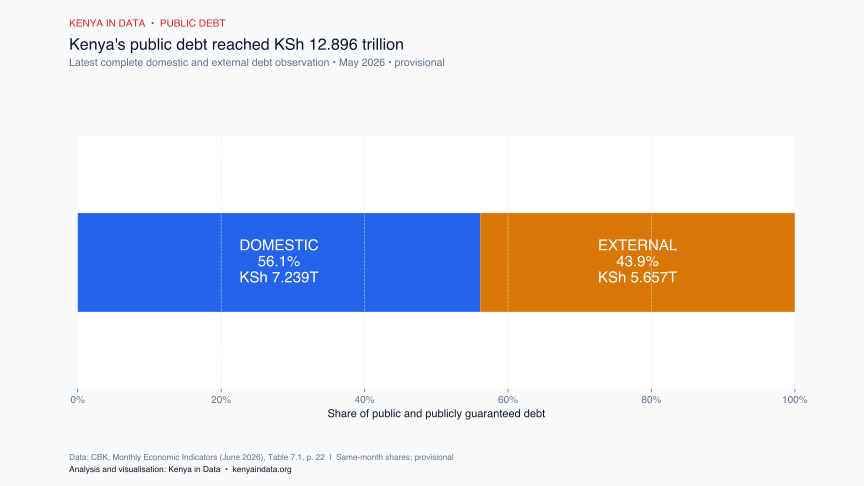
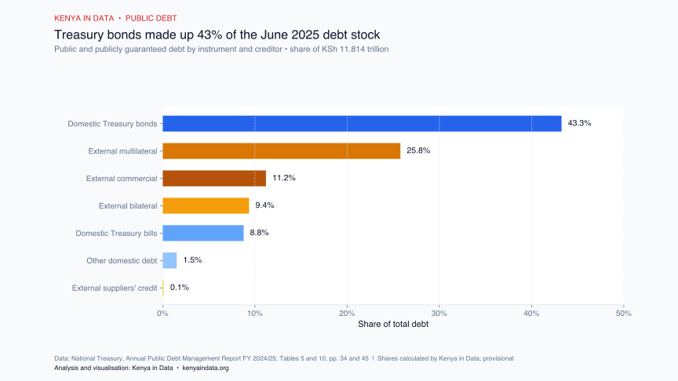
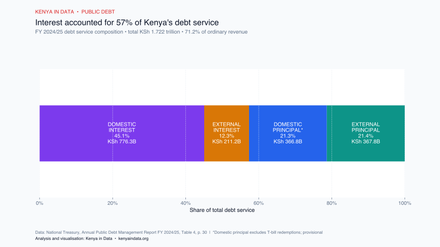
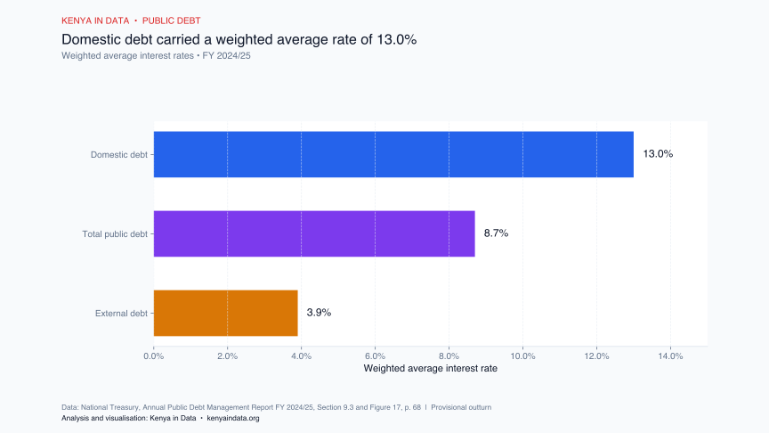
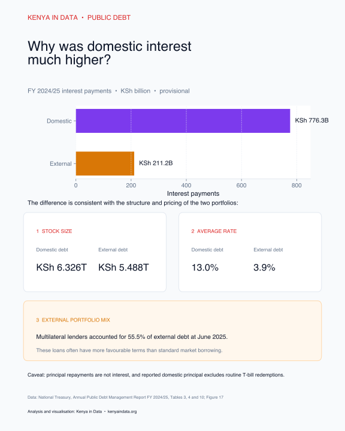
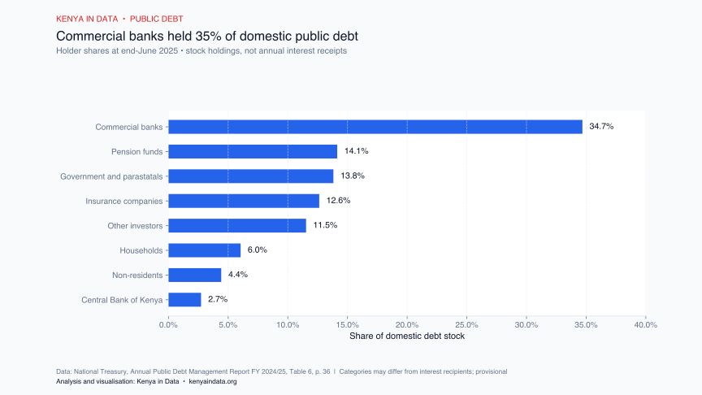
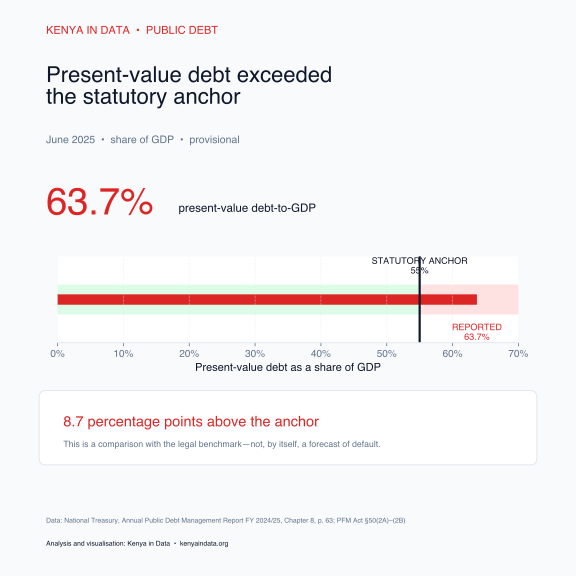

Reporting Scope and Observation Dates
This report uses two observation dates because Kenya's official debt publications serve different purposes and are released on different schedules:
- May 2026: Provides the most recent complete monthly total in the Central Bank of Kenya's June 2026 Monthly Economic Indicators.
- June 2025 / FY 2024/25: Provides the latest full fiscal-year account of debt composition, debt service, interest rates and debt-to-GDP ratios in the National Treasury's Annual Public Debt Management Report FY 2024/25.
Public and publicly guaranteed debt includes borrowing undertaken directly by the national government and debt for which the government has formally guaranteed repayment. Both source publications describe the relevant observations as provisional (CBK Table 7.1, p. 22; National Treasury Tables 3–4, pp. 28–30).
Note on GDP Ratios: Debt-to-GDP ratios are reported strictly for June 2025. Applying the June 2025 GDP measure to the May 2026 debt stock would combine mismatching reporting periods and produce an invalid ratio.
1. Total Public Debt Reached KSh 12.896 Trillion (May 2026)
At the end of May 2026, Kenya's public and publicly guaranteed debt stood at KSh 12.896 trillion. Domestic debt was KSh 7.239 trillion, while external debt was KSh 5.657 trillion.
| Component | KSh Trillion | Share of Total |
|---|---|---|
| Domestic debt | 7.239 | 56.1% |
| External debt | 5.657 | 43.9% |
| Total Public & Publicly Guaranteed Debt | 12.896 | 100.0% |

{kind=link}
{kind=link}
{kind=link}
At June 2025, the corresponding shares were 53.5% domestic and 46.5% external. The May 2026 release reported a domestic share 2.6 percentage points higher than the June 2025 baseline.
The reported nominal debt total was KSh 1.082 trillion (9.2%) higher in May 2026 than in June 2025. This reflects a comparison between two official snapshot publications rather than a fully reconciled cash-flow ledger.
2. Instrument & Creditor Breakdown (June 2025 Baseline)
The National Treasury's June 2025 fiscal-year report provides the detailed instrument and creditor composition across both domestic and external portfolios.
| Component | KSh Billion | Share of Total Debt |
|---|---|---|
| Domestic Treasury bonds | 5,110.010 | 43.25% |
| Domestic Treasury bills | 1,036.875 | 8.78% |
| Other domestic debt | 179.124 | 1.52% |
| External multilateral debt | 3,045.391 | 25.78% |
| External commercial debt | 1,322.292 | 11.19% |
| External bilateral debt | 1,106.363 | 9.36% |
| External suppliers' credit | 14.419 | 0.12% |
| Total Public & Publicly Guaranteed Debt | 11,814.474 | 100.00% |

{kind=link}
{kind=link}
{kind=link}
Treasury bonds formed the single largest component, representing 43.25% of the total debt stock and over 80% of domestic debt. Treasury bonds had a weighted average time to maturity of 7.5 years at June 2025.
3. Debt Service Absorbed 71.2% of Ordinary Revenue
In FY 2024/25, total debt service amounted to KSh 1.722 trillion. Interest payments accounted for KSh 987.495 billion (57.34%), while principal repayments accounted for KSh 734.609 billion (42.66%).
| Debt Service Component | KSh Billion | Share of Service | Share of Revenue |
|---|---|---|---|
| Domestic interest | 776.257 | 45.08% | 32.07% |
| External interest | 211.238 | 12.27% | 8.73% |
| Total Interest | 987.495 | 57.34% | 40.80% |
| Domestic principal | 366.805 | 21.30% | 15.16% |
| External principal | 367.804 | 21.36% | 15.20% |
| Total Principal | 734.609 | 42.66% | 30.35% |
| Total Debt Service (FY 2024/25) | 1,722.104 | 100.00% | 71.16% |

{kind=link}
{kind=link}
{kind=link}
Domestic Debt Carried a 13.0% Weighted Average Interest Rate
While domestic and external principal repayments were virtually identical at approximately KSh 367 billion each, domestic interest payments were more than 3.6 times higher than external interest.
The Treasury's weighted average interest rates explain this divergence: the domestic debt portfolio carried a 13.0% average interest rate, compared with just 3.9% for external debt and 8.7% across the entire public debt portfolio.

{kind=link}
{kind=link}
{kind=link}

4. Domestic Interest Composition & Debt Holders
Treasury bonds accounted for KSh 677.762 billion, or 87.3%, of total domestic interest and charges in FY 2024/25. Treasury bills generated KSh 87.560 billion (11.3%).
| Domestic Interest Component | KSh Billion | Share of Domestic Interest |
|---|---|---|
| Treasury bonds | 677.762 | 87.3% |
| Treasury bills | 87.560 | 11.3% |
| Other interest and charges | 10.935 | 1.4% |
| Total Domestic Interest & Charges | 776.257 | 100.0% |
At June 2025, commercial banks held the largest institutional share of domestic debt at 34.7%, followed by pension funds (14.1%), government & parastatals (13.8%), and insurance companies (12.6%).

{kind=link}
{kind=link}
{kind=link}
5. Statutory Debt Anchor Benchmark
At June 2025, Kenya's nominal debt stood at 67.8% of GDP, while the present value of debt was reported at 63.7% of GDP.
Section 50(2A) of the Public Finance Management Act sets Kenya's statutory debt anchor at 55% of GDP in present-value terms. The present-value debt level exceeded this legal anchor by 8.7 percentage points.

Interpretation & Caveats:
- Provisional data: Official numbers are provisional and subject to standard revisions by CBK and Treasury.
- Different observation dates: Debt stock is as of May 2026; detailed service and debt-to-GDP ratios reflect FY 2024/25.
- Revenue definition: The 71.2% service ratio uses ordinary revenue (tax + recurring non-tax revenue).
- Institutional holdings: Bank and pension debt holdings represent gross balance-sheet assets held on behalf of depositors and beneficiaries, not net institutional profits.
Download Open Data & Assets
Kenya in Data releases all underlying observation tables and chart files under an open CC BY 4.0 license for public use, journalism, and research.
{kind=link}
Primary Sources & References
Central Bank of Kenya (2026). Monthly Economic Indicators: June 2026. Nairobi: Central Bank of Kenya. Official CBK Bulletin PDF.
National Treasury of Kenya (2025). Annual Public Debt Management Report: Financial Year 2024/2025. Nairobi: The National Treasury and Economic Planning. Official Treasury Report PDF.
Kenya Law (2024). Public Finance Management Act, No. 18 of 2012 (consolidated 26 April 2024), Section 50. Kenya Law Database.